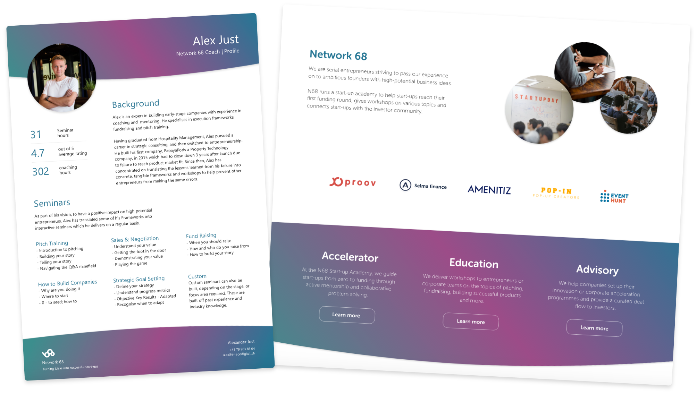

Network 68 is an accelerator programme for early stage start-ups, that helps them on their journey from idea to seed funding. We also give presentations and workshops on various topics related to entrepreneurship and building digital products. As one of the co-founders, I created N68’s visual identity, promotional documents, presentation style and design guidelines.
| Type | Branding, website & documents |
|---|---|
| Date | Feb 18’ - Present |
| Scope | Graphic design & Web design |
| Contract | Founding partner |
Network 68 tries to stand out among many established accelerator programmes by offering a truly personal, hands-on attitude by young, dynamic and still active entrepreneurs. My role was to translate these values into a visual style that speaks to every young entrepreneur out there.
The brand identity of Network 68 revolves around “connecting the dots” - both in terms of helping founders understand how to drive their business towards success and in connecting the right people within the start-up ecosystem to share their knowledge and create value for each other. Colour palette is bold, young and diverse, like the founders we take under our wings.
As a grassroots project we work on in our spare time, we decided to keep N68 largely under the radar. The few promotional materials we use are a website outlining our services (currently in development) and 1-page introduction documents, which are easy to share via email or present during a meeting.
N68 co-founders run a variety of courses and workshops on topics related to entrepreneurship and building digital products. To ensure a consistent and engaging visual style, I have created presentations that set the style and serve as a guide for the rest of the team to follow when expanding on their portfolio of courses.